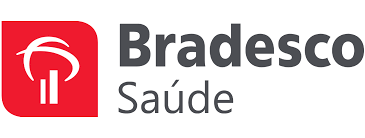

Excelência em saúde empresarial
Bradesco Saúde. Um padrão elevado de cuidado.
Uma marca tradicional no mercado de saúde suplementar, com opções empresariais de abrangência nacional, rede referenciada de hospitais, clínicas, consultórios e laboratórios, além de serviços diferenciados e possibilidades de reembolso.

Tradição, estrutura e cuidadoAtuação no setor de saúde suplementar desde 1984, conforme o portfólio institucional.Portfólio empresarial
Alternativas nacionais para diferentes perfis
O portfólio reúne linhas com características e redes próprias. A escolha considera o perfil da empresa, a acomodação desejada e os benefícios disponíveis em cada categoria.
Uma alternativa que busca equilibrar qualidade assistencial, disponibilidade de rede e eficiência de custos. Consulte a configuração de rede aplicável à contratação.
Rede de médicos, hospitais, laboratórios, clínicas e consultórios distribuída para oferecer comodidade aos beneficiários.
Uma opção desenhada para determinados mercados e perfis empresariais, com benefícios e rede conforme a categoria contratada.
Rede de atendimento com médicos, clínicas, hospitais e laboratórios em diferentes regiões do país.
Rede selecionada com hospitais de referência e serviços adicionais, incluindo Concierge nas localidades previstas no produto.
Uma das categorias mais completas do portfólio, com rede hospitalar de excelência, serviços diferenciados e opções superiores de reembolso.
Destaque especial
Meu Doutor Novamed
Uma rede de clínicas do Grupo Bradesco Seguros, com estrutura para consultas, exames e atendimentos em diferentes especialidades. As unidades podem oferecer consultas agendadas, atendimento por livre demanda e telemedicina, conforme disponibilidade local. É um diferencial relevante para quem valoriza praticidade e cuidado integrado.
✚
Meu Doutor NovamedClínicas do Grupo Bradesco Seguros
O material comercial apresenta atendimento em mais de 15 especialidades, além de exames laboratoriais e de imagem e procedimentos ambulatoriais, de acordo com a estrutura de cada unidade.
CardiologiaDermatologiaEndocrinologiaGastroenterologiaGinecologiaMedicina de famíliaOftalmologiaOrtopediaPediatriaPsicologiaUrologia+ especialidades
Diferenciais e conveniência
Benefícios que ampliam a experiência
Além da assistência médico-hospitalar, o portfólio reúne serviços digitais, programas de cuidado e vantagens para o dia a dia dos beneficiários.
Reembolso e livre escolha
Possibilidade de reembolso para despesas elegíveis realizadas fora da rede, conforme modalidade, limites, múltiplos e regras do contrato.
Bradesco Saúde Concierge
Serviços diferenciados em categorias elegíveis, como suporte em viagens, orientação, apoio em exames e conveniências. A disponibilidade depende do plano e da localidade.
Programa Meu Doutor
Seleção de médicos e acompanhamento com foco em continuidade do cuidado, acesso a especialidades e histórico clínico integrado, conforme disponibilidade.
Telemedicina 24 horas
Atendimento por vídeo por meio dos serviços de Saúde Digital, com acesso conforme as regras e os canais disponibilizados pela operadora.
Seguro viagem
Benefício disponível em categorias indicadas no material comercial, com coberturas médico-hospitalares e assistências durante viagens, sujeito às condições do produto.
Remissão por um ano
Em caso de falecimento do titular, dependentes elegíveis podem permanecer com cobertura por um ano, conforme categoria, elegibilidade e condições contratuais.
Bradesco Dental
Possibilidade de contratação simultânea do plano odontológico. O material informa a conveniência de uma única carteirinha para os dois produtos.
Descontos em farmácias
Condições especiais para compra de medicamentos em farmácias participantes, com consulta facilitada pelo aplicativo.
Clube+Saúde
Programa com descontos, benefícios e oportunidades relacionadas à saúde, bem-estar, produtos e serviços.
Aplicativo Bradesco Saúde
Acesso à carteirinha digital, busca da rede referenciada, solicitações de reembolso, autorizações e informações do plano.
Equipes de retaguarda
Nas categorias Premium e Nacional Plus, o material descreve equipes de especialistas para apoio em casos complexos em hospitais indicados.
Coparticipação opcional
Possibilidade de escolher opções com ou sem coparticipação. A configuração pode variar conforme o produto e a contratação.
Liberdade de escolha
Modalidades de reembolso
O reembolso é um dos diferenciais reconhecidos do Bradesco Saúde. As condições variam conforme o produto, a modalidade contratada e a elegibilidade da empresa.
Reembolso completo
Permite solicitar reembolso de procedimentos cobertos pelo plano, como consultas, exames, terapias, procedimentos ambulatoriais e internações realizados fora da rede, respeitando os limites e as condições contratuais.
Reembolso específico
Modalidade que contempla consultas médicas e honorários médicos de paciente internado, conforme regras próprias, tabela aplicável e critérios de elegibilidade da empresa contratante.
Conteúdo elaborado com base nos materiais comerciais Bradesco Saúde enviados: Portfólio SPG e apresentação de diferenciais. A rede, os produtos disponíveis, a acomodação, a coparticipação, o reembolso e os benefícios podem variar conforme a categoria, região, número de vidas, elegibilidade e condições contratuais. O portfólio institucional também apresenta produtos regionais específicos; esta página destaca as opções e características de abrangência nacional, sem afirmar que todas as linhas da operadora sejam nacionais. Consulte a disponibilidade atualizada antes da contratação.
Conheça a opção Bradesco Saúde ideal para sua empresa.
Converse com Gerry Dias e compare as características das categorias, redes e benefícios disponíveis para seu CNPJ.